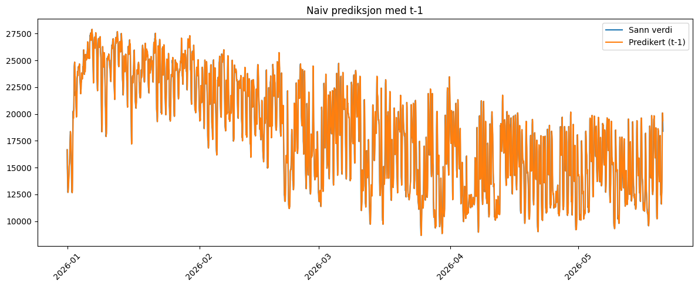
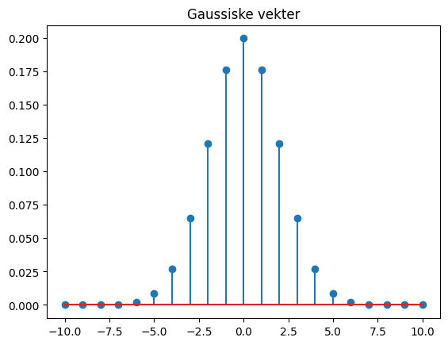
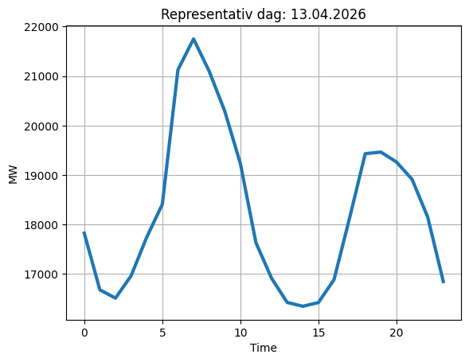
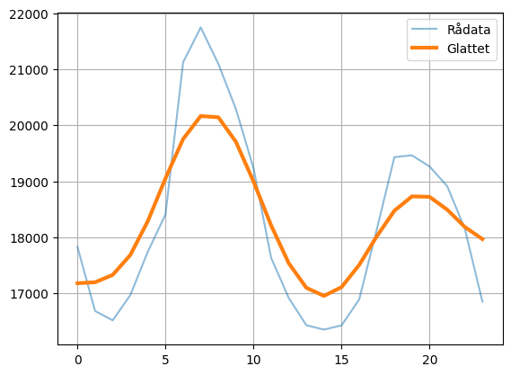
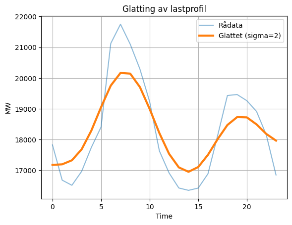
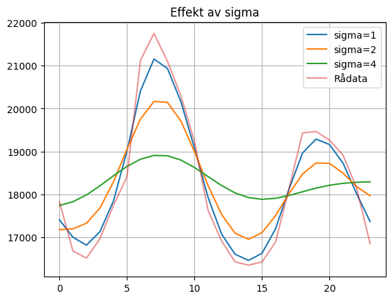
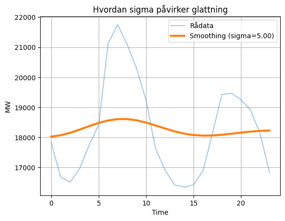

Modellering#
Vi har funnet en representativ dag for en norsk døgnprofil fra datasettet med data fra våren 2026. Dette er en datadrevet modell, det vil si at den er laget fra data, i motsetning til vår første døgnprofil som er matematisk modellert.
Vi modellerer døgnprofilen fordi den vil gi oss nyttig kunnskap om lastprofilen, og om fremtidige scenarioer, som vi bruker i driften av kraftsystemet.
Baseline (Grunnlinje / Utgangspunkt) En baseline er den enkleste mulige modellen du kan bruke, og fungerer som et referansepunkt for å se om mer avanserte metoder faktisk fungerer.
Formål: Bevise at modellen din tilfører verdi sammenlignet med enkle tommelfingerregler. Dette er særlig viktig når maskinlæringsalgoritmer blir veldig kompliserte, både for å vise til om de faktisk tilfører kunnskapsbasen og for å forhindre datalekkasje (at algoritmen ‘ser’ det den verifiserer seg mot).
Den enkleste bunnlinjen er persistensmodell, som tar forige verdi \(y_{t-1}\) som det riktige svaret for nåtiden \(y_t\) eller predikert verdi \(\hat{y}\)
En enkel regelbasert algoritme kan også brukes som bunnlinje.
En Regelbasert Kunstig Intelligens (ekspertsystemer) har vært mye brukt i kraftsystemer, spesielt innen vern, kontroll og overvåkning. Ekspersystemene bruker domenekunnskap til å styre venter. Disse systemene bruker forhåndsdefinerte IF–THEN-regler for å ta beslutninger, og anvendes blant annet i feilidentifikasjon, spenningskontroll og beskyttelseskoordinering [EBC+94].
Ekeempel på regelbasert:
if strøm > grense:
koble ut linje
La oss se på et eksempel på persistensmodell fra et datasett vi kjenner.
Vi importerer og leser i pandas med df = pd.read_csv("../data/load_data.csv", parse_dates=["Time(Local)"]),
og ser på de 3 første radene:
import pandas as pd
import matplotlib.pyplot as plt
df = pd.read_csv("../data/load_data.csv", parse_dates=["Time(Local)"])
df["Time(Local)"] = pd.to_datetime(
df["Time(Local)"],
dayfirst=True,
utc=True
)
df = df.set_index("Time(Local)")
df["Consumption"] = df["Consumption"].str.replace(",", ".").astype(float)
print(df.head(3))
Production Consumption
Time(Local)
2025-12-31 23:00:00+00:00 18448,59 16662.95
2026-01-01 00:00:00+00:00 18693,66 14953.24
2026-01-01 01:00:00+00:00 18639,68 14298.07
Indeksmetode#
Vi bruker indeksmetoden .iloc fra pandas-biblioteket til å kvitte oss med første kolonne df['Production'].
Indeksmetoden .iloc, velger vi ut kolonner vi vil jobbe videre med. Dette kalles ‘slicing’.
Med df.iloc[:, 1:] velger vi alle utenom første kolonne; kolon (:) før komma, velger alle rader, 1 kolon (1:) etter komma velger alle kolonner fra indeks 1 og utover, og står igjennom med at indeks 0 som er df['Production'], ikke blir valgt. Vi lar denne slicen bli den nye dataframen vi jobber med df_forbruk:
df_forbruk = df.iloc[:, 1:]
df_forbruk.head(3)
| Consumption | |
|---|---|
| Time(Local) | |
| 2025-12-31 23:00:00+00:00 | 16662.95 |
| 2026-01-01 00:00:00+00:00 | 14953.24 |
| 2026-01-01 01:00:00+00:00 | 14298.07 |
Sliding window med shift-metode#
For å manipulere tid i tidsserieanalyse og maskinlæring bruker vi sliding window. Da er pandas .shift-metode praktisk.
En metode er en funksjon som er knyttet til et objekt (eller en klasse).
Funksjonen .shift() tilhører dataframe objektet i pandas.
Bruker vi funksjonen på objektet; df.shift(1), vil metoden lage en ny kolonne t-1, som skifter alle radene i kolonnen nedover med en (1), eller et tidsteg. Vi har nå laget et sliding window med et tidssteg forskyvning. Legg merke til at t-1 verdien for 2026-01-01 00:00:00+00:00 er det samme som ‘Consumption’ verdien fra timen før 2025-12-31 23:00:00+00:00.
df_forbruk['t-1'] = df['Consumption'].shift(1)
print(df_forbruk.head(3))
Consumption t-1
Time(Local)
2025-12-31 23:00:00+00:00 16662.95 NaN
2026-01-01 00:00:00+00:00 14953.24 16662.95
2026-01-01 01:00:00+00:00 14298.07 14953.24
df_forbruk.isna().sum()
Consumption 0
t-1 1
dtype: int64
.dropna() metoden#
df_forbruk = df_forbruk.dropna()
Consumption t-1
Time(Local)
2026-01-01 00:00:00+00:00 14953.24 16662.95
2026-01-01 01:00:00+00:00 14298.07 14953.24
2026-01-01 02:00:00+00:00 13254.81 14298.07
df_forbruk = df_forbruk.dropna()
print(df_forbruk.head(3))
Consumption t-1
Time(Local)
2026-01-01 00:00:00+00:00 14953.24 16662.95
2026-01-01 01:00:00+00:00 14298.07 14953.24
2026-01-01 02:00:00+00:00 13254.81 14298.07
y_test = df_forbruk['Consumption']
y_pred = df_forbruk['t-1']
plt.figure(figsize=(12,5))
plt.plot(y_test.index, y_test, label='Sann verdi')
plt.plot(y_pred.index, y_pred, label='Predikert (t-1)')
plt.legend()
plt.title('Naiv prediksjon med t-1')
plt.xticks(rotation=45)
plt.tight_layout()
plt.show()

from sklearn.metrics import mean_absolute_error, mean_squared_error, r2_score
import numpy as np
mae = mean_absolute_error(y_test, y_pred)
rmse = np.sqrt(mean_squared_error(y_test, y_pred))
mape = np.mean(np.abs((y_test - y_pred) / y_test)) * 100
r2 = r2_score(y_test, y_pred)
print(f"MAE: {mae:.2f}")
print(f"RMSE: {rmse:.2f}")
print(f"MAPE: {mape:.2f}%")
print(f"R2: {r2:.3f}")
MAE: 822.04
RMSE: 1149.18
MAPE: 4.80%
R2: 0.944
Fra standardavvik til gaussisk filter#
Vi har sett at standardavviket \(\sigma\) måler spredningen i dataene:
Dette tallet forteller oss hvor langt observasjoner typisk ligger fra gjennomsnittet.
Fra beskrivelse til vekting#
I stedet for bare å måle spredningen, kan vi bruke ( \sigma ) til å konstruere en funksjon som gir vekter til datapunkter basert på avstand fra sentrum:
Denne funksjonen gir:
høy vekt til verdier nær sentrum
lav vekt til verdier langt unna
Lokal gjennomsnittsberegning#
Når vi analyserer tidsserier, ønsker vi ofte et lokalt gjennomsnitt rundt et tidspunkt ( t ).
I stedet for et vanlig gjennomsnitt (der alle punkter teller likt), bruker vi gaussiske vekter:
Dette betyr:
( x_{t-k} ): naboverdier
( G(k) ): hvor mye hver nabo skal telle
Intuisjon#
Dette kan tolkes som:
Et gjennomsnitt der nærliggende observasjoner teller mest.
Sammenligning#
Vanlig glidende gjennomsnitt:
Gaussisk filter:
Forskjellen er at:
vanlig gjennomsnitt gir lik vekt
gaussisk filter gir mest vekt til nærliggende punkter
Viktig innsikt#
Standardavviket \(\sigma\):
bestemmer hvor bred fordelingen er
bestemmer hvor mye vi “ser rundt” hvert punkt
Oppsummert#
Vi har gått fra:
gjennomsnitt ( \mu )
spredning ( \sigma )
til:
en vektfunksjon (gaussisk kurve)
som brukes til å beregne et lokalt, vektet gjennomsnitt
Dette er kjernen i det gaussiske filteret.
# vis hvordan vektene faktisk ser ut
import numpy as np
import matplotlib.pyplot as plt
k = np.arange(-10, 11)
print(k)
sigma = 2
w = np.exp(-(k**2)/(2*sigma**2))
w = w / w.sum()
plt.stem(k, w)
plt.title("Gaussiske vekter")
plt.show()
[-10 -9 -8 -7 -6 -5 -4 -3 -2 -1 0 1 2 3 4 5 6 7
8 9 10]

Gaussisk filter#
Vi starter med den kontinuerlige gaussiske funksjonen:
Her er:
x : avstand fra sentrum
\(\sigma\): standardavvik som styrer bredden på filteret
e : den naturlige eksponentialfunksjonen
Denne funksjonen er kjent som normalfordelingen, og har en karakteristisk klokkeform. Verdier nær ( x = 0 ) får høy vekt, mens verdier lengre unna får stadig lavere vekt.
Diskret versjon (tidsserier)#
Når vi jobber med datasett (for eksempel strømforbruk over tid), bruker vi en diskret versjon:
Dette betyr at hver verdi ( y_t ) er en vektet sum av nabopunkter, der vektene bestemmes av den gaussiske funksjonen.
Intuisjon#
Nærliggende punkter påvirker mest
Fjerne punkter påvirker lite
Resultatet er en glatt versjon av signalet
Dette brukes ofte for å redusere støy i tidsserier.
Representativ dag#
import numpy as np
# df: time-serie med load
# index = datetime
# Lag daglig matrise (hver dag = 24 verdier)
df['date'] = df.index.date
daily = df.groupby('date')['Consumption'].apply(list)
print('Daglige tidsserier:',daily)
# Fjern dager som ikke har 24 timer
daily = daily[daily.apply(len) == 24]
print(daily)
# Konverter til array
X = np.vstack(daily.values)
print(X)
# Gjennomsnittsdøgn
mean_profile = X.mean(axis=0)
print(mean_profile)
# Finn dag med minst avvik (minste norm)
distances = np.linalg.norm(X - mean_profile, axis=1)
# Velg mest representative dag
idx = np.argmin(distances)
rep_profile = X[idx]
rep_date = daily.index[idx]
print("Representativ dag:", rep_date)
Daglige tidsserier: date
2026-01-01 [16662.95, 14953.24, 14298.07, 13254.81, 12678...
2026-01-02 [14821.37, 13826.33, 12743.11, 12786.86, 12647...
2026-01-03 [22115.9, 21572.64, 20710.6, 20344.44, 19724.8...
2026-01-04 [23251.09, 22995.68, 22691.57, 22255.31, 21886...
2026-01-05 [24208.62, 23689.68, 23986.93, 23956.24, 24106...
...
2026-05-16 [16276.98, 14535.05, 13984.31, 13857.01, 13656...
2026-05-17 [14220.04, 12912.59, 12540.78, 12134.04, 11770...
2026-05-18 [15629.79, 14382.06, 14139.4, 14017.26, 14589....
2026-05-19 [17748.79, 17015.92, 16436.45, 15904.32, 15931...
2026-05-20 [14881.17, 14265.45, 13891.66, 13679.98, 13776...
Name: Consumption, Length: 140, dtype: object
date
2026-01-01 [16662.95, 14953.24, 14298.07, 13254.81, 12678...
2026-01-02 [14821.37, 13826.33, 12743.11, 12786.86, 12647...
2026-01-03 [22115.9, 21572.64, 20710.6, 20344.44, 19724.8...
2026-01-04 [23251.09, 22995.68, 22691.57, 22255.31, 21886...
2026-01-05 [24208.62, 23689.68, 23986.93, 23956.24, 24106...
...
2026-05-16 [16276.98, 14535.05, 13984.31, 13857.01, 13656...
2026-05-17 [14220.04, 12912.59, 12540.78, 12134.04, 11770...
2026-05-18 [15629.79, 14382.06, 14139.4, 14017.26, 14589....
2026-05-19 [17748.79, 17015.92, 16436.45, 15904.32, 15931...
2026-05-20 [14881.17, 14265.45, 13891.66, 13679.98, 13776...
Name: Consumption, Length: 139, dtype: object
[[16662.95 14953.24 14298.07 ... 17380.07 16740.26 15974.65]
[14821.37 13826.33 12743.11 ... 23506.18 22675.59 21693.33]
[22115.9 21572.64 20710.6 ... 24670.23 24444.7 23747.27]
...
[15629.79 14382.06 14139.4 ... 19827.35 18935.78 17564.5 ]
[17748.79 17015.92 16436.45 ... 18438.31 17396.93 15295.22]
[14881.17 14265.45 13891.66 ... 19944.19 19368.15 18385.77]]
[17348.67064748 16825.29064748 16483.71158273 16271.33827338
16361.54647482 17045.13460432 18490.70035971 19485.6418705
19415.1118705 18602.7971223 17716.57820144 17068.45920863
16669.99539568 16525.28388489 16645.27978417 17207.02625899
18207.51208633 19614.14935252 20812.24338129 21374.07661871
21078.09258993 20460.2818705 19615.22582734 18308.60431655]
Representativ dag: 2026-04-13
import matplotlib.pyplot as plt
t = np.arange(24)
plt.plot(t, rep_profile, linewidth=3)
plt.xlabel("Time")
plt.ylabel("MW")
plt.title(f"Representativ dag: {rep_date.strftime('%d.%m.%Y')}")
plt.grid(True)
plt.show()

from scipy.ndimage import gaussian_filter1d
smooth = gaussian_filter1d(rep_profile, sigma=2)
plt.plot(t, rep_profile, label="Rådata", alpha=0.5)
plt.plot(t, smooth, label="Glattet", linewidth=3)
plt.legend()
plt.grid(True)
plt.show()

import matplotlib.pyplot as plt
import numpy as np
t = np.arange(24)
plt.plot(t, rep_profile, label="Rådata", alpha=0.5)
plt.plot(t, smooth, label="Glattet (sigma=2)", linewidth=3)
plt.xlabel("Time")
plt.ylabel("MW")
plt.title("Glatting av lastprofil")
plt.legend()
plt.grid(True)
plt.show()

for s in [1, 2, 4]:
plt.plot(gaussian_filter1d(rep_profile, sigma=s), label=f"sigma={s}")
plt.plot(t, rep_profile, label="Rådata", alpha=0.5)
plt.legend()
plt.title("Effekt av sigma")
plt.grid(True)
plt.show()

import numpy as np
import matplotlib.pyplot as plt
from scipy.ndimage import gaussian_filter1d
from IPython.display import clear_output
import time
t = np.arange(24)
# bruk din representativ profil
data = rep_profile.copy()
plt.figure(figsize=(8,5))
# animasjon: øk sigma gradvis
for sigma in np.linspace(0.1, 5, 30):
clear_output(wait=True)
smooth = gaussian_filter1d(data, sigma=sigma)
plt.clf()
plt.plot(t, data, label="Rådata", alpha=0.4)
plt.plot(t, smooth, label=f"Smoothing (sigma={sigma:.2f})", linewidth=3)
plt.xlabel("Time")
plt.ylabel("MW")
plt.title("Hvordan sigma påvirker glattning")
plt.legend()
plt.grid(True)
plt.pause(0.1)

from ipywidgets import interact
def plot_sigma(sigma):
smooth = gaussian_filter1d(rep_profile, sigma=sigma)
plt.figure(figsize=(8,5))
plt.plot(t, rep_profile, label="Rådata", alpha=0.5)
plt.plot(t, smooth, label=f"sigma={sigma}", linewidth=3)
plt.legend()
plt.grid(True)
plt.show()
interact(plot_sigma, sigma=(0.1, 5, 0.1))
<function __main__.plot_sigma(sigma)>